ProxMox
¿Qué es?
ProMox es un servidor que administra maquinas virtuales a través de una interfaz web, se instala como sistema operativo utilizando la distribución GNU/Linux Debian.
¿Para qué se usa?
Proxmox sirve para virtualizar, eso significa que los requerimientos de la empresa en la cual labora el lector deben de ser: distintas plataformas con distintos tipos de servicios, por ejemplo servidores Linux con Apache, Python, Php, Java JSP y Windows con .NET.
Instalación y configuración
La instalación se realizó mediante el CD del Proxmox. Durante la instalacion se solicitan una serie de datos que ahora iremos viendo. La pantalla inicial de la instalación tiene este aspecto:
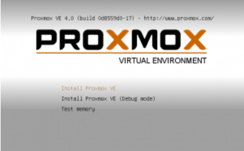Seleccionamos la primera opción para cargar el instalador de Proxmox VE:
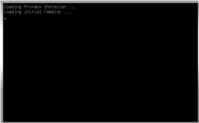Y una vez cargado dicho instalador, la siguiente pantalla muestra el Acuerdo o Contrato de Usuario Final, el famoso EULA:
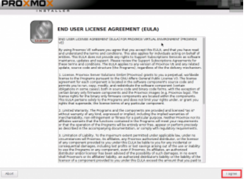Para seguir a la siguiente pantalla, pinchar el botón “I agree” para pasar a la pantalla donde se seleccionará el disco duro en el que se instalará el sistema operativo de Proxmox VE:
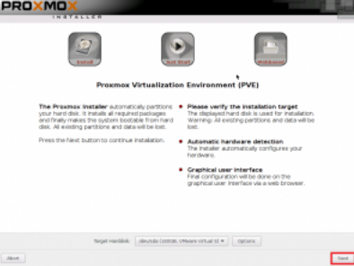Dar clic en el botón “Next” .
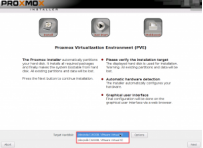Seleccionamos el disco en el caso de que tengamos dos. Ah, y también tenemos la posibilidad de personalizar tanto el espacio de disco que se utilizará y el sistema de archivos de Proxmox VE:
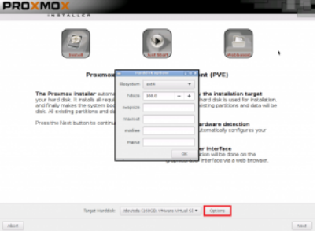La siguiente pantalla es para seleccionar el país, la zona horaria (que se establece automáticamente una vez que se selecciona el país) y la distribución del teclado:
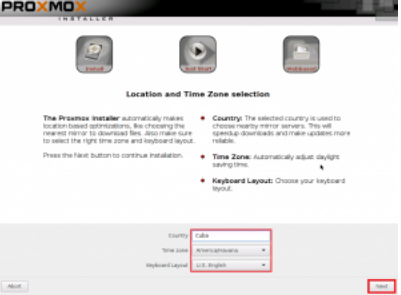Insertamos la contraseña de root en nuestra caso es admin y correo admin@admin.admin:
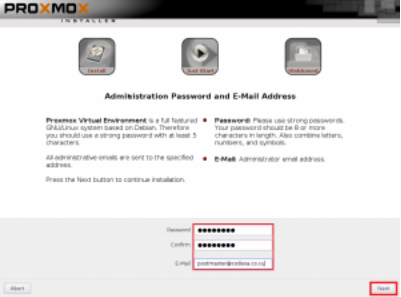Una vez dados los datos que nos solicitan, damos clic en el botón “Next” para pasar a la siguiente pantalla:
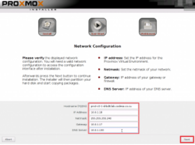En esta pantalla se deben proporcionar una serie de datos. Dichos datos son: el nombre FQDN del hipervisor (o sea, el nombre completo del servidor en la forma castellano.com), la dirección IP, la máscara de subred, la puerta de enlace y el DNS del dominio.Una vez puestos los datos continuamos.
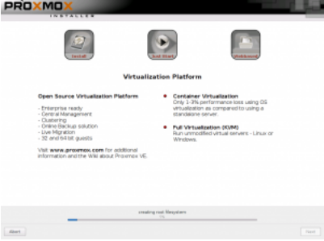Esperar la pantalla de carga.
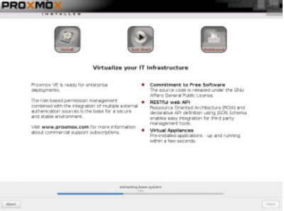 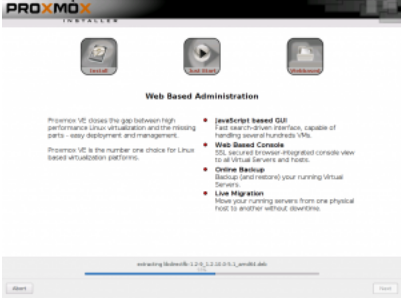 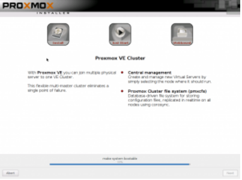 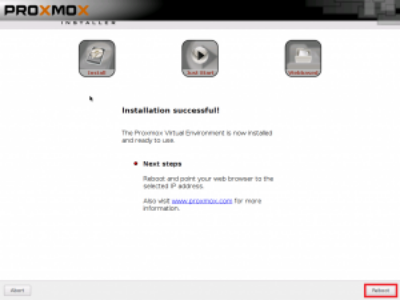Ahora todo está instalado y preparado para arrancar por primera vez un sistema Proxmox. Para ello basta con presionar el botón “Reboot”. Al iniciar el denuevo lo primero que nos sale es la pantalla de opciones de arranque:
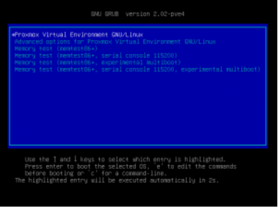En ella hay dos opciones: presionar ENTER para que el proceso de arranque comience inmediatamente o esperar los 4 segundos.
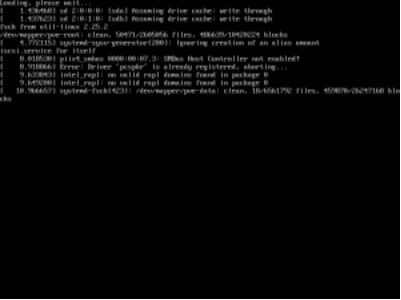Esperas unos pocos segundos y ya está listo para ser usado.
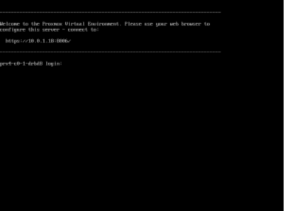Gestionar un Proxmox a base de CLI (Interfaz de Línea de Comandos) para un usuario que se inicia en esta herramienta (y también para un administrador u operador) sería un proceso tedioso. Para reducir este problema, Proxmox VE tiene un interfaz Web (un interfaz grafico).